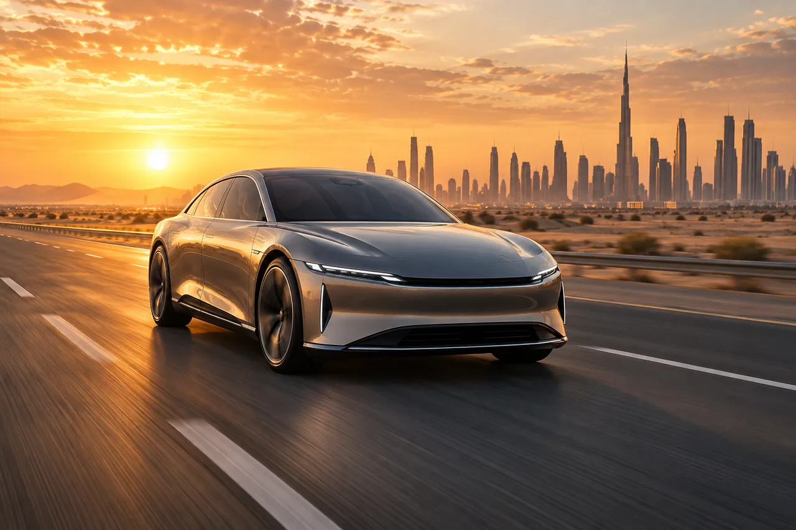
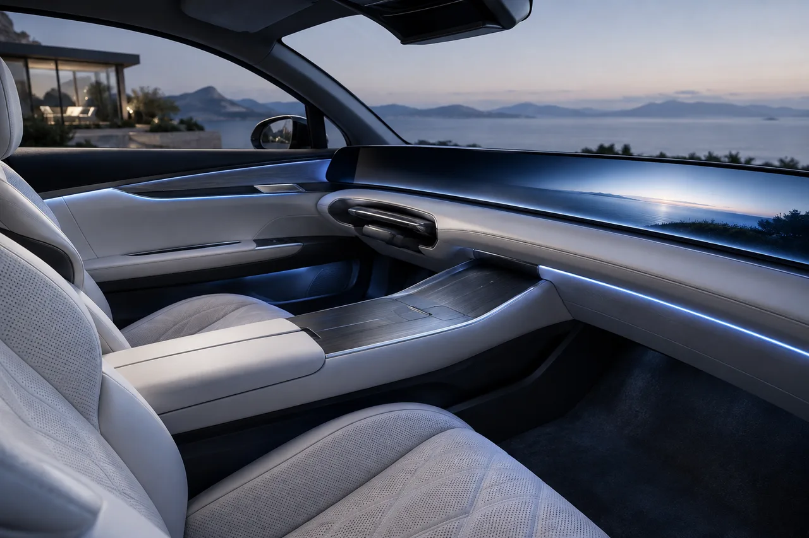
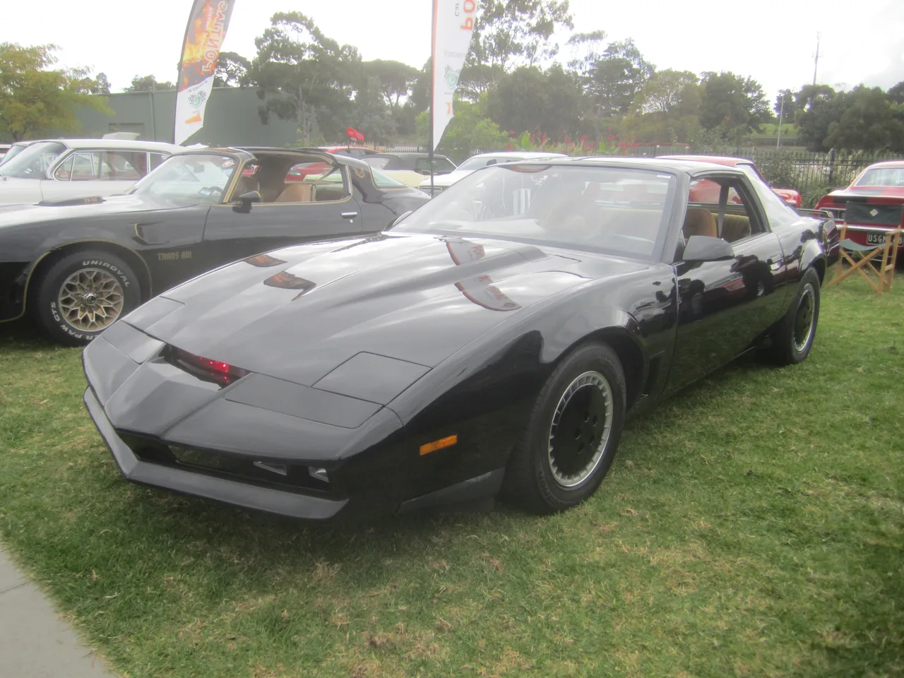
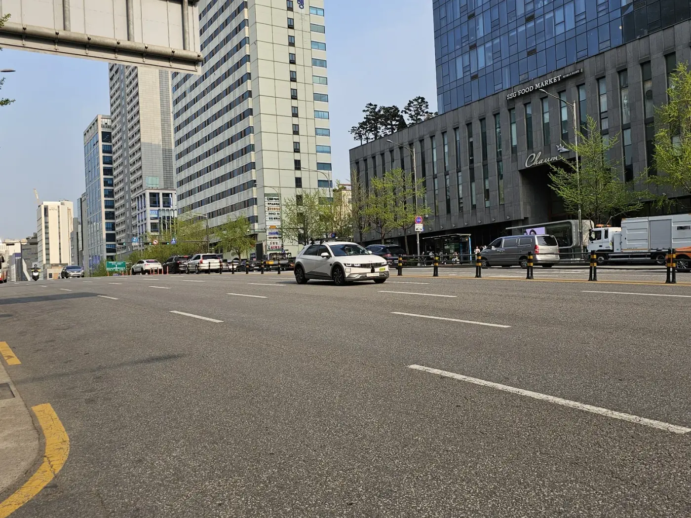
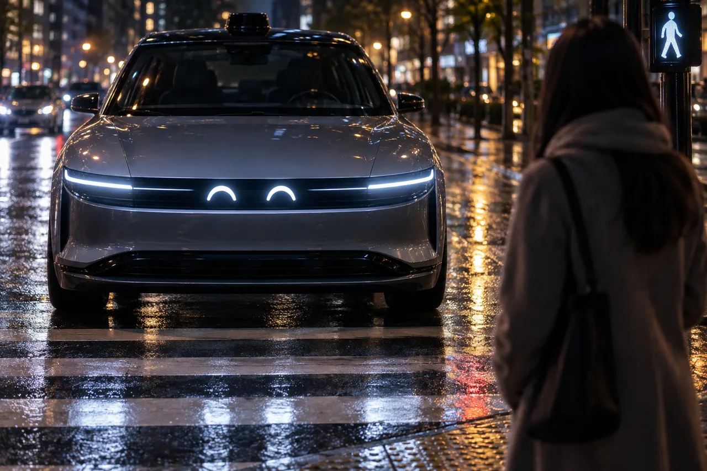

▲ 미래형 자율주행 전기차 컨셉 이미지. 실제 텐서 로보카의 디자인과는 무관하다 이미지=AI 생성
"키트, 빨리 와줘!" 1982년부터 미국에서 방영된 드라마 '전격 Z작전(Knight Rider)'에서 주인공 마이클 나이트가 손목시계에 대고 외치던 대사입니다. 스스로 판단하고, 사람 말을 알아듣고, 주인의 위기 앞에서 알아서 달려오는 인공지능 자동차 '키트(KITT)'는 당시로선 순수한 공상과학이었습니다. 그로부터 40여 년이 지난 2026년 하반기, 실리콘밸리 스타트업 텐서(Tensor)가 이 오래된 상상에 가장 가까이 다가선 양산차를 유럽·미국·아랍에미리트(UAE) 세 시장에 실제로 내놓습니다. 이름도 직설적입니다. '로보카(Robocar)'. 다만 결론부터 말하면, 로보카는 키트가 아닙니다. 무엇이 같고 무엇이 다른지, 실제 제원과 함께 짚어봤습니다.
1. 텐서 로보카, 정확히 무엇인가

▲ 미래형 자율주행 전기차가 고속도로를 주행하는 모습을 형상화한 컨셉 이미지 이미지=AI 생성
텐서는 프린스턴대 교수 출신 샤오 젠슝(Xiao Jianxiong)이 세운 회사로, 이전에 로보택시 스타트업 오토엑스(AutoX)를 운영했던 인물이 방향을 개인 소유 자율주행차로 튼 결과물이 로보카입니다. 로보카의 차체는 전장 5,525mm, 전폭 2,261mm, 전고 1,989mm, 휠베이스 3,150mm로, 국내 준대형~대형 SUV급에 해당하는 큰 덩치를 갖췄습니다. 공기저항계수는 0.253이며, 112kWh 대용량 배터리를 얹어 초급속 충전 시 20%에서 80%까지 약 10분이 걸린다고 알려졌습니다.
핵심은 역시 자율주행 하드웨어입니다. 카메라 37개, 라이다 5개, 레이더 11개, 마이크 22개, 초음파 센서 10개, 관성측정장치(IMU) 3개 등 100개가 넘는 센서가 차체 곳곳에 배치됐고, 이를 처리하는 연산 장치는 초당 8,000TOPS의 성능을 낸다고 텐서 측은 밝혔습니다. AI는 이중 구조로 설계됐습니다. 숙련된 운전자의 데이터를 학습해 즉각적으로 반응하는 '반사 신경'용 AI와, 카메라·언어를 함께 처리해 흔치 않은 복잡한 상황을 논리적으로 판단하는 멀티모달 AI가 함께 작동하는 방식입니다. 센서나 연산 장치 일부가 고장 나도 주행을 이어갈 수 있도록 하는 '페일 오퍼레이셔널(Fail-Operational)' 구조도 적용됐습니다.

▲ 운전대가 필요할 때만 대시보드에서 나타나는 '전개식 운전대' 개념을 형상화한 실내 컨셉 이미지 이미지=AI 생성
가장 상징적인 장치는 부품업체 오토리브 등과 함께 개발한 세계 최초의 양산형 접이식 운전대입니다. 레벨4 모드로 주행할 때는 운전대와 페달이 대시보드 안으로 접혀 들어가 운전석에 움직이는 부품이 아예 없어지고, 운전자가 직접 운전을 원하거나 자율주행 승인 구역을 벗어나면 다시 펼쳐져 나옵니다. 이 밖에 보행자·다른 차량과 시각적으로 소통하는 시그널 디스플레이 '카모지(CarMoji)', 손바닥 정맥으로 문을 여는 '팜리드(PalmRead)', "엄마 모시고 집으로 가줘" 같은 자연어 명령을 이해해 실행하는 차량 내장 AI 에이전트, 4륜 조향과 에어 서스펜션 등이 탑재됩니다. 생산은 미국이 아니라 베트남 하이퐁의 빈패스트(VinFast) 공장에서 이뤄지며, 2026년 하반기부터 유럽연합·미국·UAE 세 시장에서 순차로 인도될 예정입니다. 해외 매체는 판매 가격을 약 20만 달러 선으로 보도했으나, 이는 벤진가(Benzinga) 등 외신의 추정 보도일 뿐 텐서가 공식 확정한 가격은 아직 아닙니다. 텐서는 글로벌 보험사 마쉬(Marsh)와 손잡고 로보카 전용 보험 상품도 함께 준비 중인 것으로 알려졌습니다.
출시를 앞두고 실제 움직임도 이어지고 있습니다. 텐서는 2026년 2월 아랍에미리트(UAE) 정부 규제혁신기구(RegLab)로부터 레벨4 자율주행 개인용 차량 시험 운행에 대한 연방 승인을 받아 현지 도로 시험을 진행 중이며, 같은 해 7월에는 튀르키예 모빌리티 플랫폼 마르티(Marti Technologies)와 다년 계약을 맺고 현지 도시들에 로보카 기반 자율주행 차량을 배치하기로 했습니다. 개인 소유용 로보카와는 별개로, 차량 호출 서비스 형태의 사업 확장도 함께 추진되고 있는 셈입니다.
2. 키트와 로보카, 닮은 점과 결정적으로 다른 점

▲ 1982년형 폰티악 파이어버드 트랜스 앰. '전격 Z작전' 속 키트의 차체로 쓰인 것과 같은 세대의 모델이다(사진은 극 중 실제 촬영 차량이 아닌 동세대 양산차) ⓒ Sicnag, Wikimedia Commons (CC BY 2.0)
'전격 Z작전' 속 키트는 1982년형 폰티악 파이어버드 트랜스 앰을 차체로 삼았습니다. 드라마에서는 키트가 스스로 판단해 위험을 감지하고, 마이클 나이트의 음성 명령을 알아듣고, 필요하면 주인 없이도 달려오는 존재로 그려졌습니다. 다만 이 모든 장면은 어디까지나 극적 연출이었습니다. 실제 촬영에서는 차량을 오른쪽 운전석(우핸들)으로 개조해 조수석 발밑에 조종 장치를 숨기고, 스턴트맨이 바닥에 누운 자세로 직접 운전하는 방식으로 '무인 주행'처럼 보이게 만들었습니다. 즉 키트의 자율주행은 처음부터 사람이 숨어서 조종하는 원격·은닉 조작이었을 뿐, 실제 자율주행 기술과는 무관했습니다.
텐서 로보카가 내세우는 것은 이와 달리 실제 센서·AI 기반의 레벨4 자율주행입니다. 레벨4는 국제자동차기술자협회(SAE) 기준으로 '특정 조건과 구역 안에서는 운전자 개입 없이 차량이 모든 주행을 책임지지만, 그 조건을 벗어나면 사람이 다시 운전해야 하는 단계'를 가리킵니다. 모든 도로, 모든 날씨에서 운전자 없이 달릴 수 있는 레벨5와는 다르고, 텐서 스스로도 로보카를 '조건부' 레벨4로 설명하고 있습니다. 즉 키트처럼 "언제 어디서든 주인을 태우러 스스로 달려오는" 수준은 아직 아니라는 뜻입니다.
| 구분 | 키트(KITT, 1982년 드라마) | 텐서 로보카(2026년 양산차) |
|---|---|---|
| 자율주행의 정체 | 스턴트맨이 숨어서 조종하는 연출 | 센서·AI 기반 실제 레벨4 자율주행 |
| 작동 범위 | 극 중 설정상 사실상 무제한 | 승인된 구역·조건 내로 제한 |
| 사람과의 소통 | 음성 대화(연출) | 자연어 AI 에이전트 + 카모지 시각 신호 |
| 운전 장치 | 일반 운전대 상시 노출 | 자동 전개식 운전대·페달(레벨4 시 격납) |
| 존재 형태 | 허구의 캐릭터 | 실제 양산·판매되는 상품 |
3. 국내외 유사 시도들 — 로보카는 완전히 새로운 개념일까

▲ 아마존 산하 죽스(Zoox)의 로보택시. 운전대·페달 자체가 없는 전용 설계로, 레벨4 자율주행을 상업 서비스로 운영 중이다 ⓒ 9yz, Wikimedia Commons (CC BY 4.0)
'운전자 없이도 달리는 차'라는 개념 자체는 로보카가 처음이 아닙니다. 이미 구글 계열 웨이모, 아마존 산하 죽스, GM 산하였던 크루즈 등이 미국 일부 도시에서 레벨4 로보택시를 유료로 운행하고 있고, 국내에서도 현대차그룹이 서울 강남 일대에서 '로보라이드' 자율주행 시범 서비스를 운영해왔습니다. 다만 이런 사례들은 대부분 회사가 소유·관리하는 차량을 택시처럼 배차하는 서비스라는 공통점이 있습니다. 사고나 오작동에 대한 책임도 일차적으로 운영사가 지는 구조입니다.

▲ 서울 강남 도심에서 시험 주행 중인 현대차 아이오닉5 자율주행차. 국내에서도 로보택시 형태의 레벨4 시범 서비스가 이어지고 있다 ⓒ Damian B Oh, Wikimedia Commons (CC BY-SA 4.0)
텐서 로보카가 강조하는 지점은 여기서 갈립니다. 회사가 굴리는 서비스용 차량이 아니라, 개인이 소유하는 자가용으로서의 레벨4 자율주행차를 표방한다는 점입니다. 텐서 측은 이를 '세계 최초의 개인 소유 로보카'라는 문구로 내세우고 있습니다. 로보택시는 정해진 구역 안에서 회사가 통제하지만, 개인 소유 차량은 소유자가 다양한 조건에서 차를 몰고 다니는 만큼 안전 검증과 보험·법적 책임 구조를 더 폭넓게 갖춰야 한다는 난제가 남습니다. 텐서가 마쉬와 함께 로보카 전용 보험을 별도로 준비하는 것도 이런 배경과 무관하지 않아 보입니다.

▲ 자율주행차가 전면 디스플레이로 보행자와 시각 신호를 주고받는 모습을 형상화한 컨셉 이미지. 텐서 로보카의 '카모지' 기능과 유사한 개념이다 이미지=AI 생성
기아가 선보인 목적기반차량(PBV) 콘셉트 PV7 역시 자율주행 대응을 염두에 둔 모듈형 설계를 취하고 있어, 완성차 업계 전반이 '사람이 늘 운전대를 잡는 차'에서 벗어나는 방향으로 조금씩 움직이고 있음을 보여줍니다. 다만 기아·현대차 등 기존 완성차 업체들은 대부분 레벨2~3 운전자 보조 기술을 양산차에 먼저 얹고, 레벨4는 로보택시 같은 제한된 서비스 영역에서 검증한 뒤 개인용 차량으로 확장하는 단계적 전략을 취하고 있습니다. 처음부터 개인 소유 레벨4 차량을 목표로 개발된 텐서 로보카와는 접근 순서 자체가 다른 셈입니다.

▲ 기아의 목적기반차량(PBV) 콘셉트 PV7. 완성차 업체들도 모듈형 설계로 자율주행 대응을 준비하고 있다 ⓒ Wikimedia Commons
4. 그렇다면 한국 출시는 가능할까
국내 정부는 '2030 모빌리티 혁신 로드맵'을 통해 2027년까지 레벨4 완전자율주행 상용화를 목표로 내걸고, 기존의 촘촘한 사전 규제를 '선허용 후규제' 방식으로 바꾸는 작업을 진행 중입니다. 광주광역시에는 자율주행차 200대 규모의 실증 인프라가 조성되고, 현대차그룹의 로보라이드도 이 로드맵에 맞춰 운영 지역을 넓혀갈 것으로 업계는 내다보고 있습니다. 다만 이런 움직임은 대부분 정부·지자체가 관리하는 시범 구역 안에서의 로보택시·셔틀 서비스에 초점이 맞춰져 있습니다.
텐서 로보카처럼 개인이 사서 자유롭게 몰고 다니는 레벨4 승용차가 국내에서 곧바로 허용되려면 넘어야 할 문턱이 다릅니다. 특정 구역에 한정되지 않는 자가용의 특성상 임의의 도로·상황에서의 안전 검증 데이터를 국내 기준으로 새로 쌓아야 하고, 사고 시 책임 소재를 소유자·제조사·보험사 중 누구에게 물을지에 대한 법적 근거도 정비돼야 합니다. 텐서 역시 2026년 하반기 최초 출시 시장으로 유럽·미국·UAE만 밝혔을 뿐, 한국 출시 일정이나 계획을 공식적으로 언급한 적은 아직 확인되지 않습니다. 가격 역시 약 20만 달러 선으로 알려진 만큼, 설령 국내 도입이 논의되더라도 초기에는 극소수 얼리어답터를 겨냥한 시범적 형태에 그칠 가능성이 높습니다.
정리하면, 40여 년 전 브라운관 속에서 극적 연출로 그려졌던 '스스로 생각하는 차'는 이제 완전한 공상과학만은 아니게 됐습니다. 다만 텐서 로보카가 구현한 것은 '언제 어디서든 주인의 부름에 달려오는 만능 AI'가 아니라, 승인된 조건 안에서 작동하는 레벨4 자율주행차입니다. 키트와 로보카 사이의 거리는 40여 년 전보다는 확실히 좁혀졌지만, 아직 완전히 사라지지는 않았습니다.